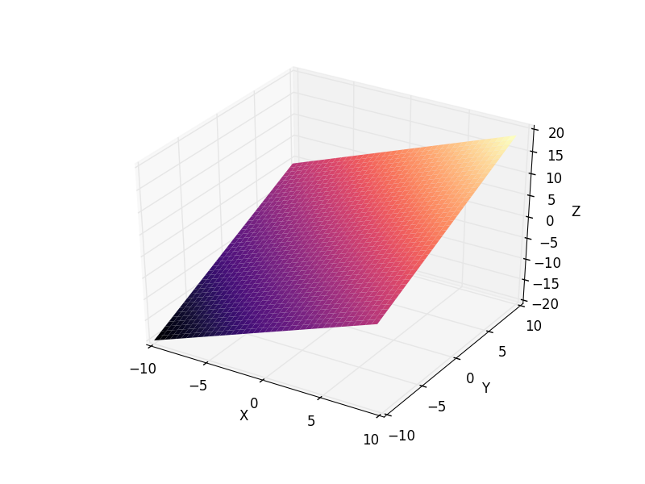
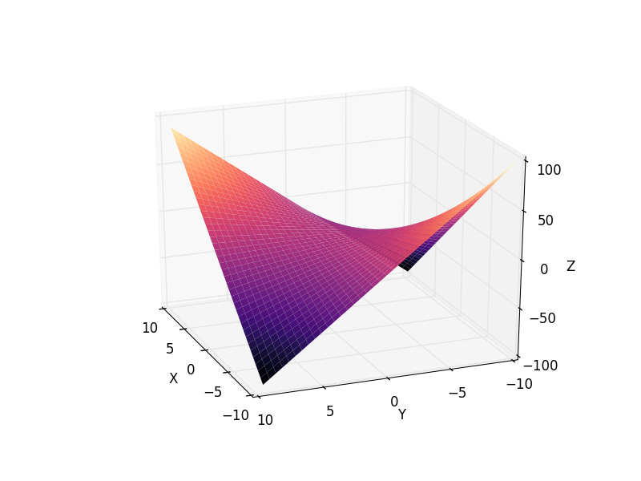
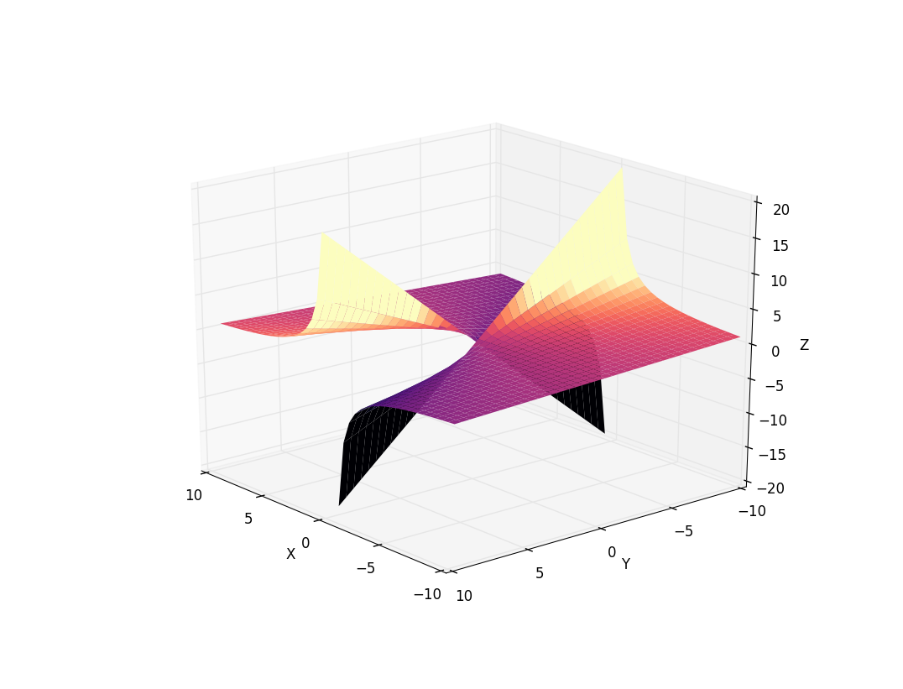
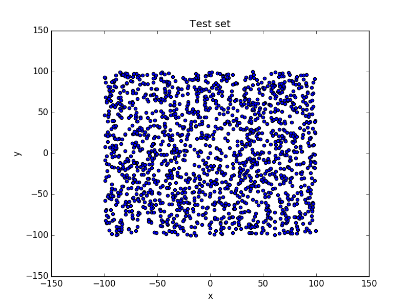

CalcuMLator is a calculator that utilizes Machine Learning to predict the values. Best known feature is the ability to divide any number by 0!
Unfortunately I still can't run the Python code in the server so there goes a "regular" calculator. To run the app follow the instructions at the repository page.
The problem
With supervised Machine Learning algorithms, it's possible to "teach" the computer a series of rules and it will repeat the learnt behaviour. In this case, perform some basic arithmetics.
Teaching addition and subtraction is quite an easy task, the computer must learn a linear function for both x an y axes:
z(x, y) = x + y
z(x, y) = x - y

Multiplication is quite different and looks like a saddle surface
z(x, y) = x * y
And division is even more rad! In real life the solution diverges for a divisor of 0, but the computer does not need to know that 😉
z(x, y) = x / y
Training methodology
For each operation (+, -, *, /) the computer is trained using different regression methods and a training set of data.
The r2 score is calculated from the random test set.
There are several ways to improve (or fit perfectly) the results, for example you could add polynomial features to the learning algorithms which would give aditional data to train the computer.
It ain't that fun to chew data very much since the objective is to stress the regression methods.
Training and testing sets
The input features (around 10000 pairs for x and y) are created and then the expected outputs zadd, zsub, zmul, zdiv, for each operation are calculated.
The training and test sets are composed of random values in a certain range.
Calculator modes
The following regression methods are supported by the calculator:
Linear regression
Not much fun because of it's mathematical properties, although it has no chances with division and multiplication.
Ridge Regression
It's the same as linear.
SVR - Support vector regression
Very complex! Thinks a lot to miss often.
Bagging Regression
Best calculator around the training range! 😊 somewhat nice but close to brute force.
Gaussian Process
Tottaly can't divide 😞
MLP Regression
Comming (hopefully) soon, as soon as sklearn 1.8.
Tensorflow
Comming (hopefully) soon
Check the current estimators report for their precision
Conclusions
It was quite fun to work with these regressors and it's clear that the algorithms behind Machine Learning can't do magic, even for this simple example, although